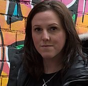

The session was moderated by Sachin Pendse, Ph.D. student at Georgia Institute of Technology, USA.
Speakers:
Dr. Munmun De Choudhury
Associate Professor, Georgia Institute of Technology, USA
Interdisciplinary and Collaborative Approaches to Digital Mental Health: A Tale of Engaging with Three Stakeholders
Digital traces, such as social media data, supported with advances in the computer science field, are increasingly being used to understand the mental health of individuals and populations. With these approaches offering promise to change the status quo in mental health for the first time since mid-20th century, interdisciplinary collaborations have been greatly emphasized. But what are some models of engagement for computer scientists that augment existing capabilities while minimizing the risk of harm? This talk will describe the experiences from working with three different stakeholders in projects relating to digital mental health – first with a governmental organization, second with healthcare providers, and third with a non-profit, all in the United States. The talk hopes to present some lessons learned by way of these engagements, and to reflect on approaches we need to realize a dream of many computer scientists: how to have their research contribute to positive societal impacts.

Dr. Becky Inkster
Department of Psychiatry, University of Cambridge, UK
Rhymes Equal Actual Life in the Youth*: Connecting Mental Health Support with Hip-Hop Culture
It is essential that we build digital mental health tools that are engaging and sensitive to both culture and context. In this talk, I will explore how hip-hop music and culture can be combined in a powerful way with human-centred algorithmic solutions, computational creativity and music therapy in order to support mental health and wellbeing. I am a Co-Founder of LYRICAL KOMBAT and Hip Hop Psych, and will illustrate examples based on these initiatives.* lyrics by KRS-ONE
Dr. John Naslund
Department of Global Health and Social Medicine, Harvard Medical School, USA
Design, Development, and Evaluation of a Digital Training Program for Building Capacity of Frontline Health Workers and Scaling Up Depression Care in Rural India
Mental disorders are a leading cause of disability worldwide; yet, in most countries, individuals living with mental disorders are more likely to have access to a mobile phone than basic mental health care. The increasing reach and availability of digital technologies in low-income and middle-income countries, such as smartphones and mobile Internet, present new opportunities to support task sharing through training and supporting community health workers in treating mental disorders. In this presentation, my objective is to describe the development and design of a digital program for training community health workers as part of a broader effort to scale up task sharing of a brief psychological treatment for depression in primary care settings in rural India. Specifically, I will describe efforts to involve community health workers throughout the iterative development and user testing of a digital training program accessible from a smartphone app, as well as the initial findings from a randomized controlled pilot study conducted in one district of Madhya Pradesh. I will discuss next steps and implications of leveraging emerging digital technologies for task sharing and bridging the global care gap for mental disorder.Dr. Maryam Mustafa
School of Science and Engineering, LUMS, Pakistan
Designing Digital Safe Spaces For Peer Support and Connectivity in Patriarchal Contexts
There is a deep stigma and taboo attached to mental health disorders and care in countries like Pakistan. Most people have little to no access to mental health support and women are particularly susceptible in patriarchal contexts like Pakistan. In this talk , I will explore the opportunities and challenges in designing peer-support and mental health mechanisms for low-income, low-literate women in Pakistan, a patriarchal and religious context where women’s movements, social relations and access to digital technologies are restricted. This is a context where shame and fear of defamation restrict the seeking of support for personal narratives around taboo subjects like abortion, sexual harassment, rape and domestic abuse. I will also discuss our findings from our participatory workshops in exploring the design of peer-support technologies for support seeking with low-income, low-literate women.